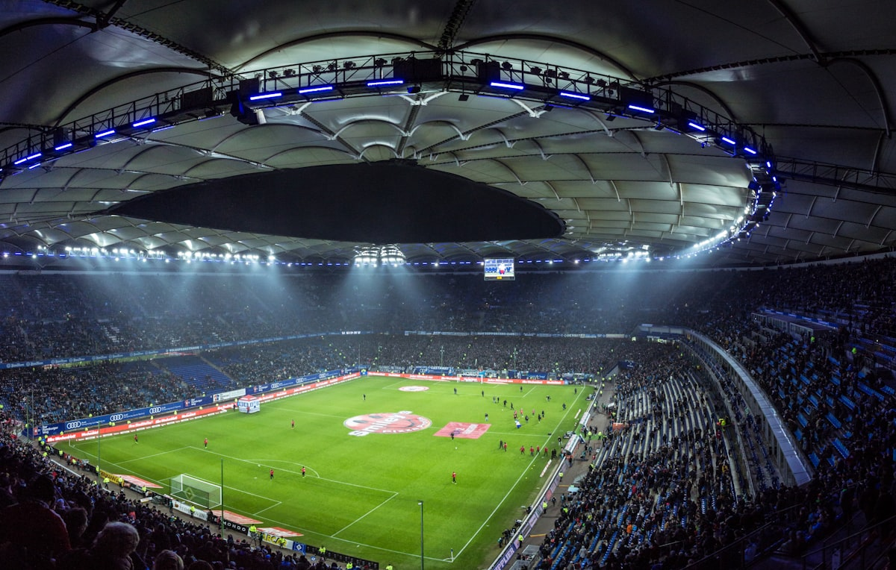

A hundred years of Saturdays
Founded by railway workers in 1912, still owned by its members, and still playing fifty yards from where it all started.
Our story
Built by the town it plays for
Seabrook Rovers was formed in the winter of 1912 by a dozen men from the locomotive sheds who wanted somewhere to play on their one afternoon off. They rented a field on Mill Lane, and apart from a spell during the war, football has been played there every season since.
The club is a members' association — no owner, no debt, every big decision voted on at the AGM. Four league titles, two County Cups and one unforgettable FA Vase quarter-final later, the point is the same as it was in 1912: give the town a team worth standing in the rain for.
- Founded
- 1912
- Members
- 870
- Volunteers
- 60+
Honours
The trophy cabinet
4
League titles
1953, 1978, 1994, 2019
2
County Cups
1987, 2022
1
FA Vase QF
2015 — the Wembley dream year
3
Women's honours
County D1 champions 2024, 2025, 2026

The Breakwater
Our ground, getting better
Capacity 1,800 with 240 seats under the old wooden stand — and, from next season, 850 more under the new East Stand. Clubhouse with proper hand pumps, a tea hut of local legend, and step-free access on all four sides.
- Adults £6, concessions £3, under-16s free with a paying adult
- Free parking on Breakwater Road; ten minutes' walk from Seabrook station
- Accessible viewing platform and accessible toilets by the clubhouse
Who runs it
The committee
Eileen Whitby
Chair · member since 1979
Dele Adeyemi
Secretary & fixtures
Pat Gorman
Treasurer
Sofia Kaur
Safeguarding officer
Become a member
£25 a season gets you a vote at the AGM, discounted admission and the warm glow of keeping a 105-year-old club alive.